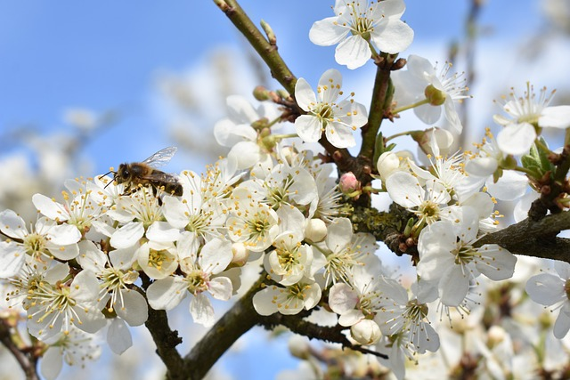
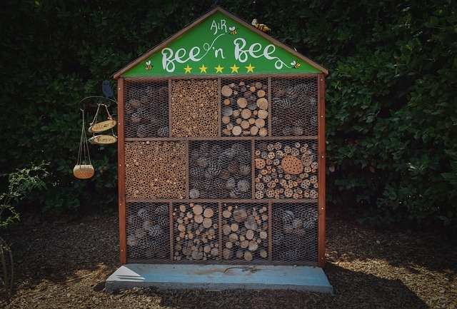
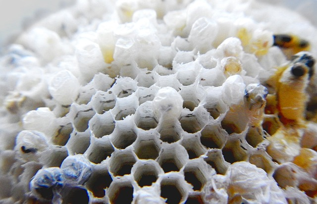

Jesteśmy pasieką działającą od 1975 roku i z dumą przedstawiamy
Wam naszą historię oraz nasze wartości. Przez ponad 45 lat przekazujemy
naszą pasję do pszczelarstwa z pokolenia na pokolenie, dbając o zdrowie
naszych pszczół i produkując najwyższej jakości miody.

Nasza przygoda rozpoczęła się w 1975 roku, gdy nasz założyciel, Jan Kowalski,
zafascynowany światem pszczół, postanowił założyć własną pasiekę.
Z małej rodzinnej pasieki, wyrosła prawdziwa marka,
która teraz cieszy się uznaniem wśród miłośników naturalnych produktów pszczelich.

Nasza filozofia opiera się na trosce o dobrostan pszczół i utrzymaniu
ekologicznej równowagi w naszym otoczeniu. Dlatego nie używamy żadnych
sztucznych środków chemicznych ani pestycydów w naszych pasiekach.
Dbamy o to, aby nasze pszczoły miały dostęp do obfitości naturalnych kwiatów,
co zapewnia im zdrowe pożywienie i korzystny wpływ na jakość naszych produktów.